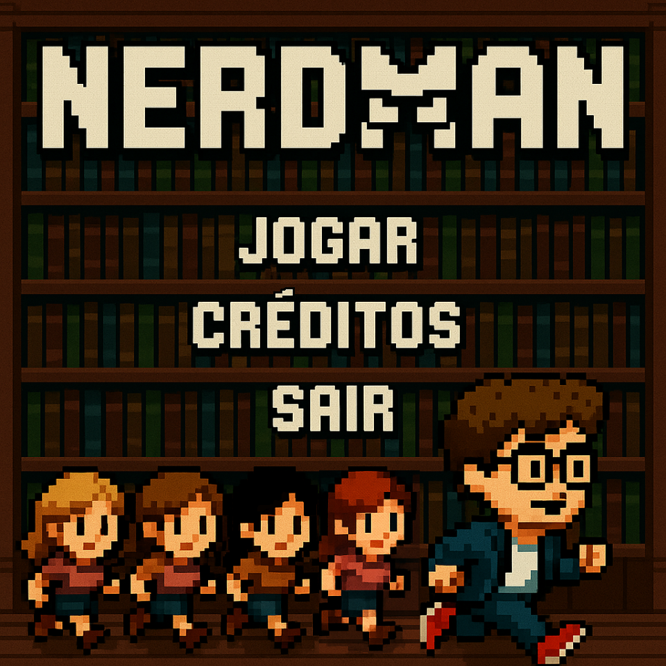

SOBRE MIM
Olá 🤗, meu nome é Luiz Filipe!
- 🔭 Estou cursando Ciência da Computação na Universidade Federal de Viçosa.
- 🌱 Experiência em Python/C++/JAVA/SQL
- 👨💻 Todos meus projetos estão em https://github.com/Dev-LFSO?tab=repositories
- 📫 Me contate luiz.filipe.ctt@gmail.com
UNICADS
Desenvolvi um Trabalho de Conclusão de Curso (TCC) voltado para atender a uma demanda real da indústria, especificamente para a Prefeitura de Jaraguá do Sul. O projeto consiste em um sistema de gerenciamento de pessoas com deficiência, visando melhorar a inclusão e a acessibilidade na cidade.

Django
Desenvolvi um simulador da plataforma Twitter utilizando HTML e CSS. O projeto foi uma oportunidade de aplicar conhecimentos em design de interface e estruturação de dados, proporcionando uma experiência semelhante à rede social.

YT Downloader
Criei um aplicativo que permite aos usuários baixar vídeos do YouTube de forma simples e rápida. O foco do projeto é oferecer uma ferramenta intuitiva que facilite o acesso a conteúdos offline.

NerdMan
NerdMan é um jogo em C++ com SFML, inspirado no Pac-Man, onde um nerd coleta itens e foge de inimigas. Criado por Luiz Filipe Santos Oliveira, Paulo Henrique de Souza Castro e Thales Rodrigues Neves na disciplina INF 110.
MINHAS EXPERIÊNCIAS
Concluí o ensino médio juntamente com o curso técnico em Desenvolvimento de Sistemas pelo SENAI, o que me proporcionou uma base sólida em programação e desenvolvimento de software. Atualmente, estou cursando Ciência da Computação pela Universidade Federal de Viçosa, onde tenho ampliado meus conhecimentos teóricos e práticos em diversas áreas da computação.
Durante minha formação técnica, aprofundei meus conhecimentos em diversas tecnologias essenciais para a área de TI. Um dos principais focos foi o desenvolvimento de projetos utilizando Django, um framework robusto para construção de aplicações web em Python. Essa experiência aprimorou minha proficiência na linguagem e me proporcionou uma compreensão mais profunda das melhores práticas de desenvolvimento, como organização de código e implementação eficiente de funcionalidades.
Além dos projetos em Django, também me dediquei à criação de sites utilizando HTML e CSS, explorando o design e a estética das páginas web. Aprendi a importância da usabilidade e da experiência do usuário, aplicando conceitos teóricos em situações práticas que facilitaram meu aprendizado.
Outra parte importante do meu desenvolvimento foi o aprendizado de JavaScript, que me permitiu adicionar interatividade e dinamismo às aplicações web. Com JavaScript, pude criar funcionalidades mais complexas e responsivas, melhorando a experiência do usuário e aprimorando a performance dos projetos.
Além disso, a familiaridade com Java me forneceu uma base sólida em programação orientada a objetos, permitindo-me compreender conceitos fundamentais que são aplicáveis a diversas linguagens e frameworks. Essa diversidade de experiências enriqueceu meu conhecimento e me preparou para enfrentar desafios variados na área de tecnologia.
Minha trajetória acadêmica também inclui participação em diversos eventos, como a 30ª Semana de Informática da UFV, a Maratona da Semana de Informática, palestras educacionais e workshops. Além disso, participei da Maratona de Programação da SBC e da Olimpíada Brasileira de Informática, experiências que reforçaram meu interesse pela área e desenvolveram minhas habilidades de resolução de problemas e trabalho em equipe.
Essas vivências foram fundamentais para consolidar minha paixão por desenvolvimento de sistemas e tecnologia. À medida que avanço na minha formação, busco unir teoria e prática, o que considero crucial para me tornar um profissional completo. Estou motivado para continuar aprendendo e enfrentando novos desafios que expandam meu conhecimento e minhas habilidades.